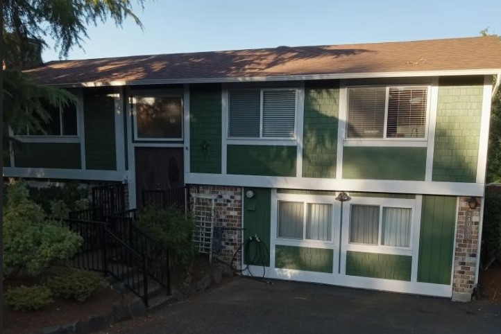

Interior / Exterior Painting
Interior painting of a residential home is a meticulous process that requires careful planning and execution to achieve a flawless finish. The first step in the professional interior painting process is thorough preparation. This involves moving furniture and valuables out of the room, covering surfaces with drop cloths to protect them from paint splatters, and removing any dust, dirt, or imperfections from the walls. Next, any holes or cracks are patched and sanded, ensuring a smooth surface for the paint. Primer is applied to promote adhesion and uniform color, followed by the application of the chosen paint using professional-grade brushes and rollers. Multiple coats may be necessary for even coverage, and painters pay close attention to detail around corners, edges, and trim. Finally, after allowing the paint to dry, a professional inspection is conducted to address any touch-ups or imperfections before returning furniture to its place, leaving the homeowner with a beautifully refreshed interior.
Exterior painting of a residential home is a comprehensive process that not only enhances the curb appeal but also protects the structure from the elements. The process begins with a thorough inspection of the exterior surface to identify any areas in need of repair. This includes addressing issues like peeling paint, rot, or mildew, which are resolved before any paint is applied. Power washing is often employed to remove dirt, debris, and loose paint, ensuring a clean canvas for the new paint. Once the surface is prepared, primer is applied to promote paint adhesion and seal porous surfaces. Professional exterior paints designed for durability and weather resistance are then expertly applied, typically using spray guns for even coverage. Multiple coats may be applied if necessary to achieve the desired finish. The final result is a fresh, long-lasting exterior finish that not only enhances the home's aesthetics but also protects it from the harsh elements for years to come.